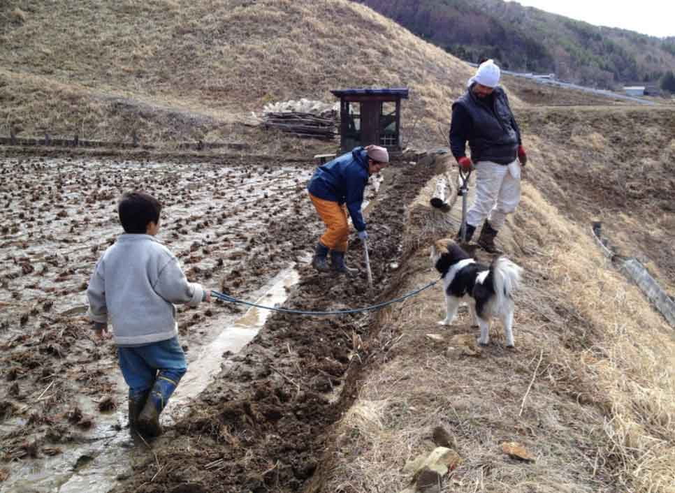
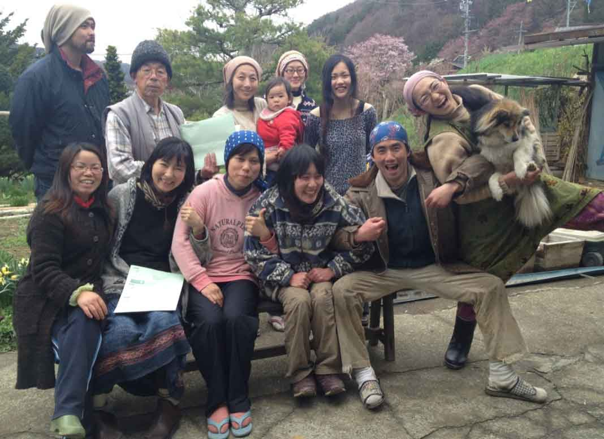

Projecten
Overig
Project Report Free Kids Village
by Xiaofeng Qian, April 2012
This is a report for my voluntary project in Japan for the month of April, and it will give you a brief message about why I was there, what I was doing and how the project went.
I am grateful for the remarkable arrangement of my current employer Collis BV in Netherlands for employees working for the company already five years or longer. This arrangement allowed me to volunteer for any non-profit organization worldwide for a full month. I chose to work at Free Kids Village which locates at a rural area in Takato Ina, Japan. My contact for this project is through SCI Japan and VIA-Netherlands which both are a branch under the charity organization Service Civil International.
The trip
It’s a rather long way from Leiden Netherlands to Takato, Japan. I flew from Netherlands to Japan on March 30 via a transfer in London and finally arrived in Tokyo16 hours later. Still I was happy that the trip went smoothly. On 2nd April Monday I visited SCI Japan office in Tokyo and met Mr. Kaneie Toyoda, a member of SCI Japan. He is a very nice gentleman. Ms. Hiroko Takahashi is the placement of SCI Japan Branch. Together with Mr. Kaneie Toyoda, we discussed overall about the project and the preparation for the trip to Free Kids Village at Takato Nagano. On 3rd April I arrived at Takato after a bus trip from Tokyo of five hours or so.
The aims
At the end of the project, I met Mr. Kaneie Toyoda again and I told all about my experiences in this project and some suggestions for the Free Kids Village.
At Frees Kids Village, I met a big family about 20 people living in the same hundred year old traditional Japanese house. They are staff, volunteers, school teenagers or children, and came from different cities in Japan. This village is founded by Ms. Takako Iwatani. It is a self sustainable village. Nearly all daily food is produced by the family itself. One main intention of this village is to provide a free-will peaceful environment for kids and teenagers so that they can behave as themselves and feel easy, and also gain some self-supported living experiences and skills as a preparation for their future life, especially in case of unexpected emergence or natural disasters encountered. Another main intention is to provide a warm hearted family atmosphere for the staff and others who loves country life, loves fields, and wish to live in a quiet place for a short or long period.
The living manner in this village is environment friendly. Main daily foods are rice and vegetables cultivated by them or wild vegetables picked up from the fields or the woods. They do not use food products from animals, such as egg, meat. The farming is organic, without using any chemical fertilizer or poisonous martial. The farming is mostly manually handled, considered as a slow farming. Salt, organic soap or vinegar is used for laundry, brushing teeth, washing hair, washing dishes, etc.
The work
My daily work consists mainly of helping with the organic farming and housekeeping. Everyday we get up around 6:00AM and go to bed around 10:00pm. Working starts when one gets up. Especially now, it is spring, a very busy season of planting everything: rice, vegetables, flowers, etc. I have helped with seeding rice and preparing the rice field, and planting vegetables and flowers. The way of preparing the young rice plants is remarkably careful and kind in a number of steps. I did not know that growing rice is also like bringing up a child. First step is to help rice seeds taking a bath in warm water for a certain period till the seeds sprouting; then to spread the seeds equally distributed in rectangular trays with a thicker layer of soil filled at the button and afterwards cover the seeds are with a thin lay of different kind of soil; finally place these trays on a well prepared soft flat bed in the rice field and protect them with plastic sheets from the coldness; in middle May the young rice plants will reach about 5 to 10 centimeters and then they will be planted in the rice fields in very small bunches. This way of growing reminds me why this rice is so delicious and expensive on market.
The people

Usually, the daily work is divided in a few tasks, distributed to teams. I have worked on different tasks and in different teams: sometimes working in the field, sometimes working in house, sometimes cooking exotic dishes western or Chinese, etc. It was really pleasant to work and live together with the family. A couple of members speak good English and the others speak some English. Although I did not really speak Japanese, I succeeded in understanding them or making myself understood with help of mixed Japanese-English speaking or writing, sometimes dictionary. I loved the family there and the corporation with them. I loved the delicious self-produced food. We learned new words in Dutch, Chinese or Japanese, talked about the things in Netherlands, China or Japan. I also learned much from them Japanese language and gained a better understanding of Japanese culture.
I also realized the beautiful characters of some individuals; they think much of others. On the other hand, I also worry about if he or she is taking enough care of him or herself while paying much attention to the rest. For future, I wish he or she becomes strong physically as well as mentally in order to take better cares for the others. I wish all the family members a happy and healthy life.
Finally, I would like to give my appreciation for the support from my employer Collis BV; thanks for the contacts and communication of SCI Japan and VIA Netherlands for their efforts and support; thanks also the support of my families in China allowing me to spend this time in Japan instead of going back to China where voluntary help is also much needed; thanks my Japanese friends for their efforts to make my stay much easier and more joyful.
Qian